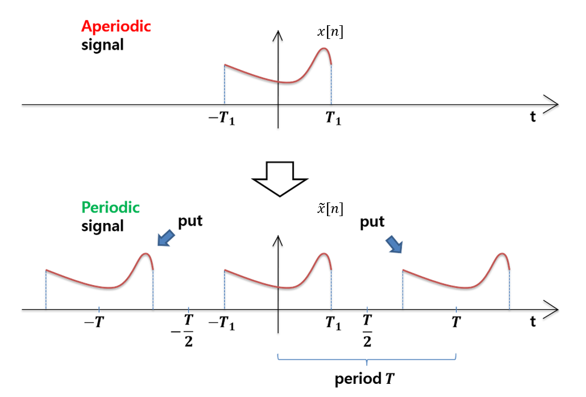

Study
Study list
Research
My Research
이산시간 푸리에 변환
Discrete Time Fourier Transform[DTFT]
[이산시간 퓨리에 변환의 필요성 ]
지금까지 푸리에를 공부하면서, 주기적인 신호에는 Fourier Series를 사용하면 된다고 했었다. 반면 현실에서는 항상 주기적인 함수가 아니라 비주기적인 함수를 사용하는 시스템이 더 많은데, 이 때 우리는 Fourier Transform을 사용한다.
그렇다면 푸리에 변환 중, 우리가 연속적인 푸리에 변환 대신에 이산시간 푸리에 변환을 쓰는 때는 과연 언제일까?
연속시간 푸리에 변환은 기본적으로 시간 영역의 신호가 연속적이어야하지만, 안타깝게도 컴퓨터 등과 같은 디지털 신호 처리 장치는 모든 자료를 연속적으로 저장할 수 없다.
따라서, 디지털 장치는 입력되는 시간함수 및 변환된 주파수 함수 모두가 이산적으로 저장될 수밖에 없기 때문에, 이때 비로소 이산 푸리에 변환을 우리는 사용한다.
앞서 말했다시피, 컴퓨터 등과 같은 디지털 신호 처리 장치는 모든 자료를 연속적으로 저장할 수 없으며, 입력되는 시간함수 및 변환된 주파수 함수 모두가 이산적으로만 저장 가능하다.
이렇게, 시간 영역과 주파수 영역 모두에서 신호 함수가 이산적이기 위해서는 시간 영역에서의 신호가 이산성을 가져야 할 뿐만 아니라 주기성도 가져야 한다.
그 이유는, 이산성(discreteness)과 주기성(periodicity)은 시간 영역과 주파수 영역에서 서로 대응하기 때문이다.
즉, 시간 영역에서의 주기성을 가진 함수는 주파수 영역에서 이산성을 갖게 되고 그 역도 성립한다.
하지만 이런 경우에도 문제될 것이 하나 없다. 왜냐하면 디지털 장치는 비주기적인 입력 신호 함수를 T시간 동안 입력 받아서 저장해 두고는 이것이 마치 T주기마다 반복되는 주기 함수인것처럼
취급하여 이산 푸리에 변환을 적용할 수 있으며, 주파수 영역의 신호 함수를 시간 영역으로 다시 복원을 하면 T의 주기를 갖는 주기 함수가 만들어지지만 T의 한개 주기만을 출력하면 원래의 신호가 복원되기 때문이다.
또한 '표본화 시간'(sampling time)만 충분히 작다면 아무런 문제가 없기 때문이다.

이처럼 위와 같은 과정을 적용하면, 이산시간 비주기 sequence를 주기적인 푸리에 변환 표현이 가능하다.
결론적으로, N이 무한대에 갈 때, 어떤 유한한 n값에 대해서
더 자세한 사항은 아래에서 살펴보자.
[Sampling]
이산 시간 푸리에 변환(Discrete Time Fourier Transform)을 하기 전에, 연속신호의 샘플링(sampling) 작업이 선결되어야 한다.
우리는 이 샘플링 작업을 통해서 아날로그 신호를 디지털화하기 위함이다.
샘플링된 함수를 이용하여 주기함수 표현 시, 전체주기 T는 TS보다 작을 수 없다.(당연한 말이다. 전체주기가 샘플링 TS보다 작을 순 없으니까.)
그렇다면 이런 사실을 기초하여, Discrete domain으로 어떻게 옮길것인지, 그리고 이 함수들을 어떻게 표현할 지 그림을 통해 직관적으로 살펴보자.
[이산 시간 푸리에 변환(Discrete Time Fourier Transform) 유도]
그렇다면, 본격적으로 이산시간 푸리에 변환공식을 유도해보자!!!!
N이 무한대로 갈 때, 비주기함수도 정현파의 합으로 나타낼 수 있다.
푸리에 급수를 통해 다음과 같은 (1)식을 얻어서 -N1에서 N2까지 포함하는 n값의 범위를 무한대로 넓히면, 다음과 같은 (2)식을 얻는다.
따라서, 근사x[n]값에 2식의 ak값을 대입하면, (3)식과 같아지고, (3)식을 풀이하면, 아래 그림과 같다.
줄여진 (3)식을 4식에 대입하면 4식풀이와 같다. 이 때 의미는 그림과 같이, 정적분의 가로, 세로 곱을 통해 이산적인 impulse값인 보라식 사각형을 형성하는 것을 의미한다.
정리하자면,
연속시간의 경우와 같이, 이산시간 푸리에 변환의 유도를 통하여 이산시간 푸리에 급수와 변환사이의 중요한 관계를 알 수 있다.
특히 주기신호 x[n]근사의 푸리에 계수 ak는 유한한 구간에 존재하는 비주기 신호 x[n]의 푸리에 변환을 구한 후, 이를 균일한 간격으로 샘플링한 것으로 표현할 수 있다.
여기서 비주기 신호 x[n]은 주기신호 x[n]근사값의 한 주기 구간에서 같고 나머지 구간에서 0이라고 가정한다.
이 사실은 실제적인 신호 처리와 푸리에 분석에서 매우 중요하다.
이러한 유도과정에서 보여준 것처럼, 이산시간 푸리에 변환이 연속시간일 경우와 많은 유사성을 갖는다.
두 가지 중요한 차이점은 이산시간 변환 X(ejw)의 주기성이고 또한 합성식에서의 유한한 적분구간이다(2pi)
이는 우리가 이미 여러 번 보았던 다음과 같은 사실로부터 유래하는데, 주파수가 2pi의 정수 배만큼 차이가 있는 이산시간 복소지수 함수들은 서로 동일하다.
즉, 여기서 1/N = 0 과 1/N = 2Pi는 동일한 신호를 생성한다는 점이다.